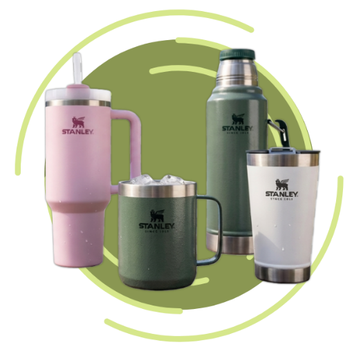

Mais que garrafas, um estilo de vida
Veja garrafas de design icônico e material com qualidade para cada momento do seu dia a dia.
Em alta

5
Classic Bottle Legendary Verde Musgo - 500ml

5
Flip Straw Verde Musgo Escuro - 651ml

5
Quencher Bloom Rosa bebê - 887ml
Sobre nós

Nossa História
A nossa história começa com William Stanley Jr., um físico americano que viveu entre 1858 e 1916. Ele inventou várias coisas no campo da engenharia elétrica, como circuitos, peças de lâmpadas incandescentes, bobinas de indução, e muito mais. Mas em 1913 ele teve uma ideia revolucionária: criar uma garrafa térmica diferente das de vidro, comuns da época, substituindo o material pelo metal, que é muito mais resistente. Rapidamente o item ganhou popularidade entre os trabalhadores da construção civil, aviadores e até soldados, durante a Segunda Guerra Mundial. Com o passar do tempo, os produtos Stanley foram conquistando novos públicos e se tornaram ótimos companheiros para trilhas e atividades ao ar livre.
Nosso Propósito
Hoje, a Stanley oferece uma ampla gama de equipamentos de alta qualidade. São opções ideais para qualquer momento, seja no escritório ou em viagens de aventura.
Há mais de 100 anos, o pilar da marca é o comprometimento que temos com nossos valores fundamentais: durabilidade, relevância e tradição. Nossos produtos são feitos para durar.
Projetados para superar e resistir até mesmo em condições adversas.
Nós nos dedicamos a cumprir uma promessa: compre Stanley e tenha equipamento de qualidade, construídos para a vida toda.
Stanley – built for life®.
Novidades

Flip Straw Youth Lavender 500ml

Aerolight Fast Flow Citron 1.1L

Mate System Matte Black - Personalizada 1.2L